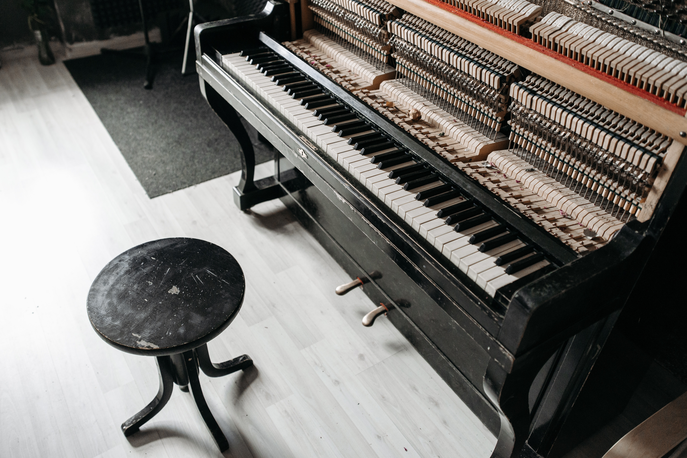

Earworm was the dream child of Emma Warm and her friend and fellow band-mate Luke Reyes. They desired to create a space for musicians to not only record their music, but to learn how to record it themselves. In addition, they wanted to introduce people to a variety of musical styles by teaching unique instruments along with the standards (guitar, piano, and violin). Among these instruments are the banjo, the mandolin, and the panflute, to name a few. Over the years, Earworm has added two new instructors to the mix and is growing steadily each day. Whether you want to realize your dream of recording your songs, learn to record your own music, learn a new instrument, or hone your developing skills, Earworm is the place to come!
Emma Worm grew up in a musical household. Her parents were both members of The Bluegrass Bandits, the popular West Virginia-based bluegrass band, so she was exposed early on to string instruments and the finger-picking styles. As she got older, she acquired an interest in wind instruments such as the clarinet and oboe, as well as the piano. Playing in multiple bands as a backup vocalist and multi-instrumentalist, she felt well-equipped to start helping others learn instruments and record their music. With years of studio experience under her belt, in 2015 she started Earworm Studios, where she hopes to help musicians realize their dreams of recording their songs.
Luke Reyes met Emma in college while studying music. They have played in multiple bands together throughout the years, and when he heard about Emma's idea to start Earworm, he jumped right on board! He is our premiere guitar instructor here at Earworm. He has played guitar his whole life. Among his specialties are the classical guitar, the electric guitar, the bass guitar, and the mandolin. He has played the banjo, the mandolin, the panflute, and the didgeridoo. He hopes to keep helping others learn the power of creativity and music!